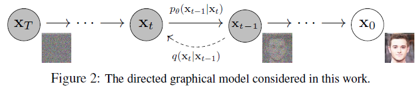

- Ho, J., Jain, A., & Abbeel, P. (2020). Denoising diffusion probabilistic models. Advances in neural information processing systems, 33, 6840-6851.
- official implementation
- pytorch implementation
개인적인 논문해석을 포함하고 있으며, 의역 및 오역이 남발할 수 있습니다. :)
1. Introduction
Deep generative models, 심층 신경망을 활용한 생성 모델들은 여러 다양한 모달리티에서 널리 쓰이며 높은 품질의 데이터 샘플들을 생성하는 데 활용되어왔습니다. GAN(Generative adversarial networks)과 VAE(variational autoencoder)가 대표적입니다.
본 논문에서는 diffusion probabilistic model, 즉 diffusion model을 생성 모델로써 제안합니다. 저자들은 diffusion model을 “똑같은 샘플을 생성하기 위해 variational inference를 통해 일정 시간 파라미터가 학습되는 Markov chain”으로 정의합니다.

위 이미지에서 \(q(\mathbf{x}_t \mid \mathbf{x}_{t-1})\) 과정을 diffusion process. 반대로, $p_{\theta}(\mathbf{x}_{t-1} \mid \mathbf{x_t})$ 과정을 diffusion process를 역으로 되돌리며 학습하는 과정인 reverse process라고 이해할 수 있습니다. 이와 같은 reverse process를 학습함으로써 노이즈가 쌓여있는 $\mathbf{x}_T$로부터 원본 데이터 $\mathbf{x}_0$를 복원할 수 있습니다.
2. Background
지금까지의 latent variable을 통해 생성해냈던 여타 다른 생성모델들과 이 diffusion model을 다르게 만드는 점이 바로 diffusion process입니다. latent variable을 활용하는 대표적 모델 VAE는 latent를 encoding하는 encoder와 이를 decoding하는 decoder를 모두 학습하는 반면, diffusion model은 forward/diffusion process는 고정된채로 이를 풀어내는 reverse process만을 학습합니다.
forward/diffusion process
위에서 언급한 것처럼 고정된 Markov chain을 여러번 거치는 방식으로 수행됩니다.
\[\begin{align} q(\mathbf{x}_t|\mathbf{x}_{t-1}) &= \mathcal{N}(\mathbf{x}_t ; \sqrt{1-\beta_t} \mathbf{x}_{t-1}, \beta_t \mathbf{I}), \\ q(\mathbf{x}_{1:T} | \mathbf{x}_0) &= \prod^T_{t=1} q(\mathbf{x}_t|\mathbf{x}_{t-1}) \end{align}\]첫 입력, 원본 이미지 \(\mathbf{x}_0\)를 총 $T$번의 Markov chain을 거침으로써 이미지에 노이즈를 부여하게 됩니다. 이 때, $t$번의 step을 차근차근 밟아나가면서 $\mathbf{x}_0$에서 $\mathbf{x}_t$를 만들어 낼 수 있겠지만, 한 번에 이를 만들어 낼 수 있습니다.
차근차근 밟아나가며 \(\mathbf{x}_t\)를 생성하는 것은 memory는 물론 computing resource도 많이 소모하는 방법입니다. 저자들은 어차피 stochastic gradient를 사용하기 때문에 $t$에 대한 기댓값을 한 번에 계산하는 식으로 구현할 수 있다고 말합니다.
\[\begin{align} q(\mathbf{x}_t | \mathbf{x}_0) &= \mathcal{N}(\mathbf{x}_t; \sqrt{\bar{\mathbf{\alpha}}_t} \mathbf{x}_0, (1-\bar\alpha_t)\mathbf{I}), \\ \alpha_t &= 1-\beta_t, \bar\alpha_t = \prod^t_{s=1}\alpha_s \end{align}\]Reverse Process
노이즈를 총 \(T\)번 부여한 뒤, 이 결과 \(\mathbf{x}_T\)를 원복하려는 생성 태스크에선 diffusion process의 역 계산인 $q(\mathbf{x}_{t-1} \mid \mathbf{x}_t)$를 타겟으로 학습하고자 하는 solution입니다. 따라서, 이 분포를 근사할 수 있는 모델 parameter, $\theta$를 학습하는 것이 diffusion model의 주요 idea입니다.
\[\begin{align} p_{\theta}(\mathbf{x}_{0:T}) &= p(\mathbf{x}_T) \prod^T_{t=1} p_{\theta}(\mathbf{x}_{t-1} | \mathbf{x}_t), \\ p_{\theta}(\mathbf{x}_{t-1} | \mathbf{x}_t) &= \mathcal{N}(\mathbf{x}_{t-1}; \mu_{\theta}(\mathbf{x}_t, t), \Sigma_{\theta}(\mathbf{x}_t, t)) \end{align}\]위 식에서, 각 $t$ step에서의 평균 $\mu_{\theta}$와 표준편차 $\Sigma_{\theta}$는 학습되어야 하는 parameter들 입니다. 다만, 여기의 $\Sigma_{\theta}$는 학습 가능한 parameter로 두고 학습할 수 있겠지만 저자들의 경험상 상수로 두고 학습해도 무방하다고 합니다. 이 단계들의 시작점인 $p(\mathbf{x}_T)=\mathcal{N}(\mathbf{x}_T; \mathbf{0}, \mathbf{I})$는 충분히 Gaussian Noise가 층층히 쌓인 결과이기 때문에 표준정규분포의 형태로 정의할 수 있습니다.
3. Diffusion models and denoising autoencoders
이제 본 논문의 주요 기여점, 위에서 언급한 idea를 어떻게 하나의 loss function으로 정리할 수 있었는지 살펴보겠습니다.
\[\mathbb{E}_q[\underbrace{D_{KL}(q(\mathbf{x}_T|\mathbf{x}_0) || p(\mathbf{x}_T))}_{L_T} + \sum_{t>1}\underbrace{D_{KL}(q(\mathbf{x}_{t-1}|\mathbf{x}_t, \mathbf{x}_0) || p_{\theta}(\mathbf{x}_{t-1} | \mathbf{x}_t))}_{L_{t-1}} \underbrace{-\log p_{\theta}(\mathbf{x}_0 | \mathbf{x}_1)}_{L_0}]\]위 최종 loss의 정의는 각 step $t$의 변화에 따라 loss term이 어떻게 구성되어 있는지 알 수 있습니다. 전반적인 loss의 구성은 각 step에 따라 forward process $q$분포와 reverse process $p$분포의 차이를 KL Divergence의 형태로 정의해 두 분포의 차이를 줄이는 컨셉으로 이루어져 있습니다.
Forward process and Loss
여기에서 \(\mathbf{x}_T\)는 항상 Gaussian distribution을 근사하게 됩니다 ($p(\mathbf{x}_T) = \mathcal{N}(\mathbf{x}_T; \mathbf{0}, \mathbf{I})$). 따라서 $q(\mathbf{x}_T \mid \mathbf{x}_0)$는 사실상 표준정규분포로 빠르게 수렴할 것입니다. 때문에 학습 간 무시해도 되는 loss term입니다.
$L_T$의 의미를 다시 생각해보면, 아래 두 분포의 차이를 의미하는 것을 알 수 있습니다.
- \(p(\mathbf{x}_T)\): 노이즈가 쌓인 $\mathbf{x}_T$의 분포
- \(q(\mathbf{x}_T \mid \mathbf{x}_0)\): $\mathbf{x}_0$가 주어졌을 때, $\mathbf{x}_T$로 diffusion process가 진행된 후의 분포
따라서 두 분포는 모두 자연스럽게 랜덤한 정규분포일 것이고, 그 차이는 아주 미미할 것입니다.
Reverse process and Loss
해당 loss term이 DDPM의 핵심 loss term이라고 할 수 있습니다. 그 의미를 생각해보면, $p$와 $q$의 reverse process 및 forward process 분포 차이를 줄이는 것으로 볼 수 있죠.
허나 갑자기 \(L_{t-1}\)에 타겟으로 제공되어야 할 \(q(\mathbf{x}_{t-1} \mid \mathbf{x}_t)\) 대신 \(q(\mathbf{x}_{t-1} \mid \mathbf{x}_t, \mathbf{x}_0)\)가 등장해 상당히 어색합니다. 이는 단일 조건이 주어진 \(q(\mathbf{x}_{t-1} \mid \mathbf{x}_t)\) 분포는 구할 수 없지만, 하나의 조건이 더 주어진 $q(\mathbf{x}_{t-1} \mid \mathbf{x}_t, \mathbf{x}_0)$ 분포는 Bayes’ rule에 의해 정리되고 추적이 가능하기 때문입니다.
\[\begin{align} q(\mathbf{x}_{t-1} | \mathbf{x}_t, \mathbf{x}_0) &= \mathcal{N}(\mathbf{x}_{t-1}; \tilde\mu(\mathbf{x}_t, \mathbf{x}_0), \tilde\beta_t\mathbf{I}) \\ &= q(\mathbf{x}_t | \mathbf{x}_{t-1}, \mathbf{x}_0) \frac{q(\mathbf{x}_{t-1} | \mathbf{x}_0)}{q(\mathbf{x}_t | \mathbf{x}_0)} \\ &= \cdots \\ &\propto \exp \left( -\frac{1}{2} \left( (\frac{\alpha_t}{\beta_t}+\frac{1}{1-\bar\alpha_{t-1}})\mathbf{x}^2_{t-1} - (\frac{2\sqrt{\alpha_t}}{\beta_t}+\frac{2\sqrt{\bar\alpha_{t-1}}}{1-\bar\alpha_{t-1}}\mathbf{x}_0)\mathbf{x}_{t-1} + C(\mathbf{x}_t, \mathbf{x}_0) \right) \right), \\ & \text{where } C(\mathbf{x}_t, \mathbf{x}_0) \text{ is some function not involving } \mathbf{x}_{t-1}. \end{align}\]자세한 수식은 참조 포스팅에서 확인해주시기 바랍니다. 위 수식에서 \(\mathbf{x}_{t-1}\)에 대한 Gaussian density function의 정의에 의해 \(\mathbf{x}_{t-1}\)에 대한 Gaussian 분포의 평균과 분산을 도출할 수 있게 됩니다.
\[\begin{align} \tilde\beta_t &= \frac{1-\bar\alpha_{t-1}}{1-\bar\alpha_t} \cdot \beta_t \\ \tilde\mu_t(\mathbf{x}_t, \mathbf{x}_0) &= \frac{\sqrt{\alpha_t}(1-\bar\alpha_{t-1})}{1-\bar\alpha_t}\mathbf{x}_t + \frac{\sqrt{\bar\alpha_{t-1}}\beta_t}{1-\bar\alpha_t}\mathbf{x}_0 \end{align}\]다시, reparameterization trick에 의해 \(\mathbf{x}_0=\frac{1}{\sqrt{\bar\alpha_t}}(\mathbf{x}_t - \sqrt{1-\bar\alpha_t}\epsilon_t)\) 로 표현할 수 있고, 이를 위 식에 대입해
\[\begin{align} \tilde\mu_t = \frac{1}{\sqrt{\alpha_t}}(\mathbf{x}_t - \frac{1-\alpha_t}{\sqrt{1-\bar\alpha_t}}\epsilon_t), \\ \text{where } \epsilon_t, \epsilon_{t-1}, ... \sim \mathcal{N}(\mathbf{0}, \mathbf{I}) \end{align}\]위와 같이 평균을 도출할 수 있습니다.
이제 다 왔습니다. 주어진 입력 \(\mathbf{x}_t\)의 분포를 알아냈으니 우리의 모델이 이 \(\mathbf{x}_t\)를 모방할 수 있게 차이를 줄이는 방향으로 학습할 수 있습니다. 위에서 KL Divergence로 표현된 $L_{t-1}$를 아래와 같이 쓸 수 있는데요.
\[\begin{align} L_{t-1} = \mathbb{E}_q \left[ \frac{1}{2\sigma^2_t} \lVert \color{red}{\tilde\mu_t(\mathbf{x}_t, \mathbf{x}_0)} - \color{cyan}{\mu_\theta(\mathbf{x}_t, t)} \rVert ^2 \right] + C, \\ \text{where } C \text{ is a constant that does not depend on } \theta. \end{align}\]우리가 학습하고자 하는 분포가 \(p_\theta(\mathbf{x}_{t-1} \mid \mathbf{x}_t) = \mathcal{N}(\mathbf{x}_{t-1} ; \mu_\theta(\mathbf{x}_t, t), \Sigma_\theta(\mathbf{x}_t, t))\) 임을 생각해보면 학습 단계에서 입력으로 주어지는 \(\mathbf{x}_t\)로부터 $\tilde\mu_t$를 추적할 수 있습니다. 따라서, $\mu_\theta$를 위 수식을 통해 $\tilde\mu_t$와의 차이를 줄이는 방향으로 학습할 수 있게됩니다.
이 수식을 우리가 알고있는 정보들을 조합해 학습에 간단한 형태로 바꾸어보겠습니다.
\[\begin{align} L_t &= \mathbb{E}_{\mathbf{x}_0, \epsilon} \left[ \frac{1}{2\lVert\Sigma_\theta\rVert_2^2} \lVert \color{red}{\frac{1}{\sqrt{\alpha_t}} \left( \mathbf{x}_t - \frac{1-\alpha_t}{\sqrt{1-\bar\alpha_t}}\epsilon_t \right) } - \color{cyan}{\frac{1}{\sqrt{\alpha_t}} \left( \mathbf{x}_t - \frac{1-\alpha_t}{\sqrt{1-\bar\alpha_t}}\epsilon_\theta(\mathbf{x}_t, t) \right)} \rVert^2 \right] \\ &= \mathbb{E}_{\mathbf{x}_0, \epsilon} \left[ \frac{(1-\alpha_t)^2}{2\alpha_t(1-\bar\alpha_t)\lVert\Sigma_\theta\rVert_2^2} \lVert \epsilon_t - \epsilon_\theta(\mathbf{x}_t, t) \rVert^2 \right] \\ &= \mathbb{E}_{\mathbf{x}_0, \epsilon} \left[ \frac{(1-\alpha_t)^2}{2\alpha_t(1-\bar\alpha_t)\lVert\Sigma_\theta\rVert_2^2} \lVert \epsilon_t - \epsilon_\theta(\sqrt{\bar\alpha_t}\mathbf{x}_0 + \sqrt{1-\bar\alpha_t}\epsilon_t, t) \rVert^2 \right] \end{align}\]마지막으로 논문에서는 경험적인 결과로 계수를 제외해도 모델의 수렴에 상관없다고 언급합니다.
\[L_t^{\text{simple}} = \mathbb{E}_{t\sim[1,T], \mathbf{x}_0, \epsilon_t} \left[ \lVert \epsilon_t - \epsilon_\theta(\sqrt{\bar\alpha_t}\mathbf{x}_0 + \sqrt{1-\bar\alpha_t}\epsilon_t, t) \rVert \right]\]최종적으로 정리된 학습 알고리즘을 논문에서와 같이 아래로 정리할 수 있습니다.

Appendix. Code Implementation
코드 구현의 리뷰는 아래 repo를 참고 했습니다.
1) Training Overview
1
2
3
4
5
6
7
8
9
10
11
12
13
14
15
16
17
18
19
20
21
22
23
24
25
26
27
28
29
from denoising_diffusion_pytorch import Unet, GaussianDiffusion, Trainer
model = Unet(
dim = 64,
dim_mults = (1, 2, 4, 8),
flash_attn = True
)
diffusion = GaussianDiffusion(
model,
image_size = 32,
timesteps = 100, # number of steps
sampling_timesteps = 100, # number of sampling timesteps (using ddim for faster inference [see citation for ddim paper])
objective = 'pred_noise'
)
trainer = Trainer(
diffusion,
'path/to/your/images',
train_batch_size = 32,
train_lr = 8e-5,
train_num_steps = 700000, # total training steps
gradient_accumulate_every = 2, # gradient accumulation steps
ema_decay = 0.995, # exponential moving average decay
amp = True, # turn on mixed precision
calculate_fid = True # whether to calculate fid during training
)
trainer.train()
2) Gaussian Diffusion - Training
2-1) initialize
먼저 생성자에서 논문에서 정의한 loss term과 sampling의 계산을 위한 여러 사전정보들을 초기화합니다.
1
2
3
4
5
6
7
8
9
10
# denoising_diffusion_pytorch/denoising_diffusion_pytorch.py
# L421
def linear_beta_schedule(timesteps):
"""
linear schedule, proposed in original ddpm paper
"""
scale = 1000 / timesteps
beta_start = scale * 0.0001
beta_end = scale * 0.02
return torch.linspace(beta_start, beta_end, timesteps, dtype = torch.float64)
1
2
3
4
5
6
7
8
9
10
11
12
13
14
15
16
17
18
19
20
21
22
23
24
25
26
27
28
29
30
31
32
33
34
35
36
37
38
39
40
41
42
43
44
45
46
47
48
49
50
51
52
53
54
55
56
57
58
59
60
# denoising_diffusion_pytorch/denoising_diffusion_pytorch.py
# L457
class GaussianDiffusion(nn.Module):
...
# L489
if beta_schedule == 'linear':
beta_schedule_fn = linear_beta_schedule
elif beta_schedule == 'cosine':
beta_schedule_fn = cosine_beta_schedule
elif beta_schedule == 'sigmoid':
beta_schedule_fn = sigmoid_beta_schedule
else:
raise ValueError(f'unknown beta schedule {beta_schedule}')
betas = beta_schedule_fn(timesteps, **schedule_fn_kwargs)
alphas = 1. - betas
alphas_cumprod = torch.cumprod(alphas, dim=0)
alphas_cumprod_prev = F.pad(alphas_cumprod[:-1], (1, 0), value = 1.)
timesteps, = betas.shape
self.num_timesteps = int(timesteps)
# sampling related parameters
self.sampling_timesteps = default(sampling_timesteps, timesteps) # default num sampling timesteps to number of timesteps at training
assert self.sampling_timesteps <= timesteps
self.is_ddim_sampling = self.sampling_timesteps < timesteps
self.ddim_sampling_eta = ddim_sampling_eta
# helper function to register buffer from float64 to float32
register_buffer = lambda name, val: self.register_buffer(name, val.to(torch.float32))
register_buffer('betas', betas)
register_buffer('alphas_cumprod', alphas_cumprod)
register_buffer('alphas_cumprod_prev', alphas_cumprod_prev)
# calculations for diffusion q(x_t | x_{t-1}) and others
register_buffer('sqrt_alphas_cumprod', torch.sqrt(alphas_cumprod))
register_buffer('sqrt_one_minus_alphas_cumprod', torch.sqrt(1. - alphas_cumprod))
register_buffer('log_one_minus_alphas_cumprod', torch.log(1. - alphas_cumprod))
register_buffer('sqrt_recip_alphas_cumprod', torch.sqrt(1. / alphas_cumprod))
register_buffer('sqrt_recipm1_alphas_cumprod', torch.sqrt(1. / alphas_cumprod - 1))
# calculations for posterior q(x_{t-1} | x_t, x_0)
posterior_variance = betas * (1. - alphas_cumprod_prev) / (1. - alphas_cumprod)
# above: equal to 1. / (1. / (1. - alpha_cumprod_tm1) + alpha_t / beta_t)
register_buffer('posterior_variance', posterior_variance)
# below: log calculation clipped because the posterior variance is 0 at the beginning of the diffusion chain
register_buffer('posterior_log_variance_clipped', torch.log(posterior_variance.clamp(min =1e-20)))
register_buffer('posterior_mean_coef1', betas * torch.sqrt(alphas_cumprod_prev) / (1. - alphas_cumprod))
register_buffer('posterior_mean_coef2', (1. - alphas_cumprod_prev) * torch.sqrt(alphas) / (1. - alphas_cumprod))
betas= $\beta_t$alphas= $\alpha_t = 1 - \beta_t$
alphas_cumprod= $\bar\alpha_t = \prod_{i=1}^t \alpha_i$alphas_cumprod_prev= $\bar\alpha_{t-1} = \prod_{i=1}^{t-1} \alpha_i$posterior_variance= $\tilde\beta_t = \frac{1-\bar\alpha_{t-1}}{1-\bar\alpha_t}\cdot\beta_t$- posterior_mean
posterior_mean_coef1= $\frac{\sqrt{\bar\alpha_{t-1}\beta_t}}{1-\bar\alpha_t}$posterior_mean_coef2= $\frac{\sqrt{\alpha_t}(1-\bar\alpha_{t-1})}{1-\bar\alpha_t}$
정의는 본문에서 참고
2-2) forward function
1
2
3
4
5
6
7
8
9
10
11
# L457
class GaussianDiffusion(nn.Module):
...
# L796
def forward(self, img, *args, **kwargs):
b, c, h, w, device, img_size, = *img.shape, img.device, self.image_size
assert h == img_size and w == img_size, f'height and width of image must be {img_size}'
t = torch.randint(0, self.num_timesteps, (b,), device=device).long()
img = self.normalize(img)
return self.p_losses(img, t, *args, **kwargs)
diffusion의 학습을 시작하면 GaussianDiffusion 인스턴스의 forward method가 실행됩니다. 여기에서 diffusion process의 time step $t$를 샘플링하게 됩니다. 이 경우엔 self.num_timesteps=100로 설정했고, batch_size는 32로, 총 32개의 [0, 99] 범위의 랜덤한 $t$를 생성할 것입니다.
1
2
3
4
5
t = tensor([ 6, 0, 90, 76, 86, 47, 77, 8,
11, 50, 59, 59, 96, 46, 67, 55,
4, 71, 43, 76, 88, 62, 18, 26,
93, 29, 4, 82, 48, 46, 35, 63],
device='cuda:0')
2-3) method - p_losses
이후 발전된 형태의 수식 구현코드들이 여럿 포함되어 있지만, 이를 제외하고 원조 DDPM의 구현코드(self.objective == 'pred_noise')만 표현하면 아래와 같습니다.
1
2
3
4
5
6
7
8
9
10
11
12
13
14
15
16
17
18
19
20
21
22
23
24
25
26
27
28
29
30
31
# L457
class GaussianDiffusion(nn.Module):
...
# L741
def q_sample(self, x_start, t, noise = None):
noise = default(noise, lambda: torch.randn_like(x_start))
return (
extract(self.sqrt_alphas_cumprod, t, x_start.shape) * x_start +
extract(self.sqrt_one_minus_alphas_cumprod, t, x_start.shape) * noise
)
...
# L749
def p_losses(self, x_start, t, noise = None, offset_noise_strength = None):
b, c, h, w = x_start.shape
noise = default(noise, lambda: torch.randn_like(x_start))
# noise sample
x = self.q_sample(x_start = x_start, t = t, noise = noise)
# predict and take gradient step
model_out = self.model(x, t)
target = noise
loss = F.mse_loss(model_out, target, reduction = 'none')
...
먼저, noise와 x_start($\mathbf{x}_0$)를 통해 $t$ 시점에서의 posterior를 self.q_sample method를 통해 샘플링합니다.
잘 살펴보면 self.q_sample method의 정의는 본문의 Algorithm 1의 다섯번째 줄 $\epsilon_\theta(\sqrt{\bar\alpha_t}\mathbf{x}_0 + \sqrt{1-\bar\alpha_t}\epsilon, t)$의 수식과 같다는 것을 알 수 있습니다.
마지막으로 샘플링한 것을 noise($\mathbf{\epsilon}$)와의 MSE(Mean Squared Error)를 구하는 것을 loss로 정의할 수 있습니다.
3) Generating Overview
생성 과정은 아래의 예시와 같이 self.sample method를 수행하며 진행됩니다.
1
2
sampled_images = diffusion.sample(batch_size=4)
sampled_images.shape # (4, 3, 32, 32)
4) Gaussian Diffusion - Generating
4-1) method - sample
발전된 형태인 DDIM의 구현(self.ddim_sample)을 제외하고, 구현코드를 보면 $T$ (self.num_timesteps)부터 0까지 $t$(t)를 차례차례 밟아가며 self.p_sample method를 수행하는 구조를 띄고 있습니다.
따라서 self.p_sample 메서드의 인자 t는 99부터 시작해 0까지 총 100($=T$)번 실행되며, 100번 이미지를 생성해낼 겁니다.
1
2
3
4
5
6
7
8
9
10
11
12
13
14
15
16
17
18
19
20
21
22
23
24
25
26
27
28
29
# L457
class GaussianDiffusion(nn.Module):
...
# L654
def p_sample_loop(self, shape, return_all_timesteps = False):
batch, device = shape[0], self.device
img = torch.randn(shape, device = device)
imgs = [img]
x_start = None
for t in tqdm(reversed(range(0, self.num_timesteps)), desc = 'sampling loop time step', total = self.num_timesteps):
self_cond = x_start if self.self_condition else None
img, x_start = self.p_sample(img, t, self_cond)
imgs.append(img)
ret = img if not return_all_timesteps else torch.stack(imgs, dim = 1)
ret = self.unnormalize(ret)
return ret
...
# L715
def sample(self, batch_size = 16, return_all_timesteps = False):
image_size, channels = self.image_size, self.channels
sample_fn = self.p_sample_loop if not self.is_ddim_sampling else self.ddim_sample
return sample_fn((batch_size, channels, image_size, image_size), return_all_timesteps = return_all_timesteps)
이 과정 역시 본문의 Algorithm 2의 전체적인 프로세스 정의와 같음을 확인할 수 있었습니다.
그렇다면 self.p_sample method의 정의를 살펴보겠습니다.
4-2) method - p_sample
1
2
3
4
5
6
7
8
9
10
11
12
13
14
15
16
17
18
19
20
21
22
23
24
25
26
27
28
29
30
31
32
33
34
35
36
37
38
39
40
41
42
43
44
45
46
47
48
49
50
51
52
53
54
55
56
57
58
59
# L35
ModelPrediction = namedtuple('ModelPrediction', ['pred_noise', 'pred_x_start'])
...
# L457
class GaussianDiffusion(nn.Module):
...
# L600
def q_posterior(self, x_start, x_t, t):
posterior_mean = (
extract(self.posterior_mean_coef1, t, x_t.shape) * x_start +
extract(self.posterior_mean_coef2, t, x_t.shape) * x_t
)
posterior_variance = extract(self.posterior_variance, t, x_t.shape)
posterior_log_variance_clipped = extract(self.posterior_log_variance_clipped, t, x_t.shape)
return posterior_mean, posterior_variance, posterior_log_variance_clipped
...
# L609
def model_predictions(self, x, t, x_self_cond = None, clip_x_start = False, rederive_pred_noise = False):
model_output = self.model(x, t, x_self_cond)
maybe_clip = partial(torch.clamp, min = -1., max = 1.) if clip_x_start else identity
pred_noise = model_output
x_start = self.predict_start_from_noise(x, t, pred_noise)
x_start = maybe_clip(x_start)
if clip_x_start and rederive_pred_noise:
pred_noise = self.predict_noise_from_start(x, t, x_start)
return ModelPrediction(pred_noise, x_start)
...
# L634
def p_mean_variance(self, x, t, x_self_cond = None, clip_denoised = True):
preds = self.model_predictions(x, t, x_self_cond)
x_start = preds.pred_x_start
if clip_denoised:
x_start.clamp_(-1., 1.)
model_mean, posterior_variance, posterior_log_variance = self.q_posterior(x_start = x_start, x_t = x, t = t)
return model_mean, posterior_variance, posterior_log_variance, x_start
...
# L645
def p_sample(self, x, t: int, x_self_cond = None):
b, *_, device = *x.shape, self.device
batched_times = torch.full((b,), t, device = device, dtype = torch.long)
model_mean, _, model_log_variance, x_start = self.p_mean_variance(x = x, t = batched_times, x_self_cond = x_self_cond, clip_denoised = True)
noise = torch.randn_like(x) if t > 0 else 0. # no noise if t == 0
pred_img = model_mean + (0.5 * model_log_variance).exp() * noise
return pred_img, x_start
먼저, self.p_sample method의 마지막 줄에서 x_start 변수는 역시 본문의 Algorithm 2의 의 것과 동일한 형태로 구현되어 있습니다. x_start 변수를 추적하다보면 아래의 self.predict_start_from_noise method에서 도출되는 것을 확인할 수 있는데요, 이 계산식이 본문의 Algorithm 2의 네 번째 줄의 것과 동일한 것을 확인할 수 있었습니다.
1
2
3
4
5
6
7
8
9
# L457
class GaussianDiffusion(nn.Module):
...
# L576
def predict_start_from_noise(self, x_t, t, noise):
return (
extract(self.sqrt_recip_alphas_cumprod, t, x_t.shape) * x_t -
extract(self.sqrt_recipm1_alphas_cumprod, t, x_t.shape) * noise
)
그렇다면 실제 생성될 이미지인 pred_img 변수는 어떻게 구성될까요?
pred_img를 구성하는 model_mean과 model_log_variance 변수를 추적하다보면, 두 변수 모두 self.q_posterior method에서 도출되는 것을 확인할 수 있습니다.
그 계산 결과는 diffusion model의 reverse process를 지속적으로 학습하며 추적이 가능해진 posterior 분포를 구성하는 과정으로 보여집니다. 다시 말해, 본문에서 언급한 아래의 평균과 분산으로 분포를 구성해 이미지를 생성함을 알 수 있죠.
posterior_variance= $\tilde\beta_t = \frac{1-\bar\alpha_{t-1}}{1-\bar\alpha_t}\cdot\beta_t$- posterior_mean
posterior_mean_coef1= $\frac{\sqrt{\bar\alpha_{t-1}\beta_t}}{1-\bar\alpha_t}$posterior_mean_coef2= $\frac{\sqrt{\alpha_t}(1-\bar\alpha_{t-1})}{1-\bar\alpha_t}$
References
Comments powered by Disqus.